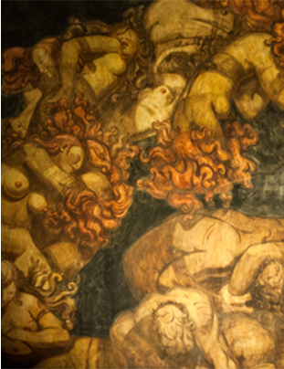

-
 Marcel Dzama - By Michael Barron
Marcel Dzama - By Michael Barron
Scopophobes—those with a fear of being spied
upon—would do well to steer clear of theBrooklyn studio of Marcel Dzama, an artistfamous for crafting skullduggerous characters, in drawn, painted, sculpted -
 Judd Foundation - By Chris Wiley
Judd Foundation - By Chris Wiley
“Nook” is the word that came to mind when I was feeling around for a way to describe Donald Judd’s library in his singularly beautiful five-story loft in the heart of SoHo. The library is tucked away in a corner of what was once Judd's working space, a floor of the building that is as spare as any of his hard-edged works.
-

Internet Poetry - By Nick Laird
IOn a quiet street on a hill on the outskirts of Oslo,Norway, is a museum built by an artist to house his sculptures, his paintings, and his remains. The building itself is a monument to the macabre. The door is imposing, the heavy sort that youhave to bend down and lean into, its knob a cast-bronze coiled snake. A low passageway to an inner door requires a shimmy and a crouch. It is rumored that Emanuel Vigeland (1875–1948) wanted visitors to bow to the urn that contained his ashes as they entered and exited the space
-
 Anna Centenary Library
Anna Centenary Library
- By Samanth SubramanianQuagga Rare Books and Art opened in 1991, the dawn of the new South Africa, in Kalk Bay. Early settlers had burned mussel shells to produce lime (“kalk”) for building. The little fishing village and bay, caught in the giant lobster pincer of Cape Town’s False Bay, has a long pier, brightly painted boats, and fishmongers gutting the day’s catch on hosed-down stone slabs.
-
Art Basel Portfolio - By Emily Stokes
“I often stopped in front of the souk butcher, so as to better admire the slabs of raw meat hanging from hooks or spread over the white tiles of the counter… health-ruining legs of lamb, delicious veal tenderloins, minced beefsteaks that simply cried out for a good grilling, beef shanks, lamb chops.”?
-
 Alexander Shulgin (1925–2014)
Alexander Shulgin (1925–2014)
- By Hamilton MorrisWhen I first entered Alexander Shulgin’s library,in Lafayette, California, I began photographing the books as quickly and thoroughly as I could, starting at the tops of the shelves and moving down, then across, shelf by shelf, to ensure that I had documented everything.In a house filled with people who have lived their lives under the shadow of government surveillance, I didn’t want to look as if I were engaged in some sort of clandestine activity—especially when I was simply embarrassed by how fanatically obsessed I was with Shulgin and his prolific contributions to medicinal chemistry and psychopharmacology.
-
 Art Basel Portfolio
Art Basel Portfolio
- By Emily StokesHow is Doris Lessing’s The Golden Notebook like a bunch of flowers? Or, how is The Golden Notebook like thisbunch of flowers: arranged in a white trough balanced on two little feet, like nipples; asymmetrical and oddly lawless, combining the plain (Leatherleaf Fern), the symbolic (Star of Bethlehem), the luscious (Persian Buttercup), the common (Red Carnation), and an unidentifiable spray of shimmering bronze?For her show at the New Museum in New York earlier this year, Camille Henrot, who is interested in systems of taxonomy, interpreted the Japanese art of ikebana to translate titles from her library into exotic flower arrangements.Each “book” in Is It Possible To Be A Revolutionary and Like Flowers? was displayed in a different kind of vessel, and each choice of flower was personal and associative, taking into account the names of the books, the Latin and common names of the flowers, and the plants’ reputed and actual pharmacological powers.